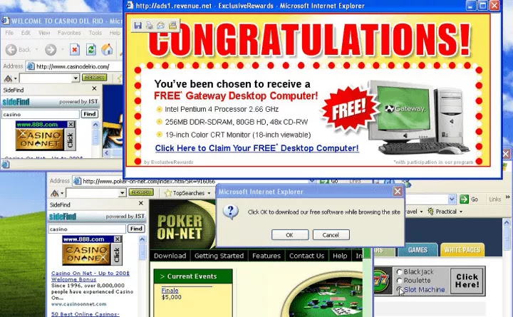

¿Cómo podemos identificar los ataques cibernéticos?
Lentitud en la conexion a Internet
La calidad de navegación es un identificador muy claro para detectar un posible ataque cibernético, ya
que cuando el firewall está dentro del sistema de tu dispositivo, este programa realentiza tu
dispositivo de maneras muy complejas, desde ahora si en algún momento le pasa esto a tu dispositivo es
mejor buscar una solución rápida e instantánea podría hacer lo antes mencionado, descargar o actualizar
un antivirus para que el antivirus detecte el programa malicioso.
Problemas de funcionamiento de servicios particulares
Ya sea un mensaje que quieras enviar, una descarga que desees realizar , un video que quieras ver y no
puedas realizar de manera fácil ninguna de estas funciones teniendo buena conexión a internet es muy
probable que tengas un programa malicioso en tu dispositivo ,porque estas ciberdelincuentes estarían
manipulando e interceptando todos los datos que viajan a través de su dispositivo, ya sean fotos,
videos, notas de voz, etc. Tendrían un monitoreo completo de su dispositivo por este motivo, ten mucho
cuidado con los clic que hagas en internet.
Publicidades sospechosas
Si estas usando tu móvil , tableta o laptop y aparece de un momento repentino publicidades sobre
productos , es algo probable que estas sean un malware esperando que le des un solo clic para poder
entrar a tu dispositivo , solo necesita un solo CLIC .

Cuidado si tienes una empresa
Comúnmente en las empresas es donde se dan a menudo estos ataques, especialmente las que tienen una red
de conexión interna o sistema SAP (sistema, aplicación y productos para el procesamiento de datos) si
este sistema en algún momento colapsa en este caso se debe verificar si es una falla de sistema y si no
es así es muy probable que sea un caso muy visible de un ataque cibernético.
Video sobre: Tipos de ciberataques más comunes